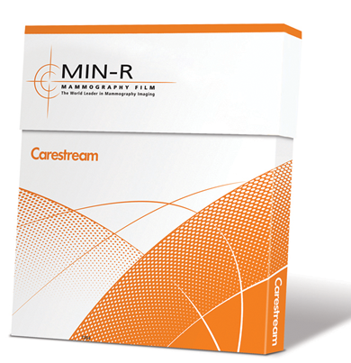

Carestream min-r 2000 plus
Sistema para mamografía

DESCRIPCIÓN: La película MIN-R 2000 PLUS proporciona un nuevo nivel de rendimiento en el diagnóstico de mamografías. Esta película ofrece una calidad de imagen altamente confiable, de modo que genera confianza a la hora de diagnosticar. También proporciona la estabilidad y durabilidad que espera para lograr entornos de procesamiento coherentes. Gracias a su confiabilidad, ayuda a reducir las tasas de repetición y, por lo tanto, reduce los costos y la exposición del paciente, al mismo tiempo que aumenta la productividad del centro de diagnóstico.
CARACTERÍSTICAS:
• Resolución, detalle y contraste superior. Resultados que aumentan la confianza y la facilidad del diagnóstico. La gran densidad máxima (D-Max) de la película MIN-R 2000 PLUS produce imágenes con un gran contraste que facilitan la interpretación en los negatoscopios mamográficos. Mediante una única pantalla de intensificación, el resultado es un agradable tono azul. La gran resolución de la película y la nitidez de los detalles mejoran la detección de las anomalías pequeñas.
• Robusto en respuesta a los cambios del entorno de procesamiento. Solidez en la que puede confiar. La película MIN-R 2000 PLUS está diseñada para proporcionar solidez física y estabilidad en el procesamiento. Permite un procesamiento coherente día a día, tanto en tanques poco profundos como en entorno compartidor. Su resultado, poca manipulación de artefactos y de procesamiento.
• Flexibilidad que se adecua al entorno. La película MIN-R 2000 PLUS se adecua al flujo de trabajo existente y normalmente no necesita ajustes en el equipo ni en los procedimientos. Es compatible con las pantallas CARESTREAM MIN-R, pero también se pueden utilizar con las pantallas mamográficas ortocromáticas de otros fabricantes. Para obtener unos resultados óptimos, utilice la película junto con el sistema completo de CARESTREAM incluidos los productos químicos de procesamiento, las pantallas, los chasis y los procesadores.
ESPECIFICACIONES:
|
Película |
Pantalla |
Ciclo |
Velocidad relativa 2 |
Contraste 3 |
D-Max |
|
|
Rp |
Ex II |
|||||
|
MIN-R 2000 Plus |
MIN-R 2000 |
Estándar |
150 |
3,9 |
4,1 |
4,0 |
|
MIN-R 2000 Plus |
MIN-R 2190 |
Estándar |
190 |
3,9 |
4,1 |
4,0 |
DATOS COMPLEMENTARIOS: Si desea obtener más información sobre el sistema para mamografía CARESTREAM MIN-R 2000, o los químicos Carestream, favor de contactar al representante CARESTREAM de su localidad o a:
CARESTREAM
Teléfono: (33) 3134-6200
o bien, visítenos en: www.carestream.com.mx